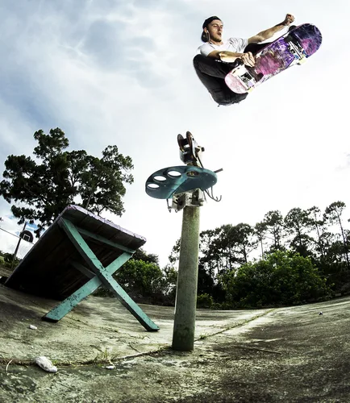

History
kateboarding began in California during the late 1940s and early 1950s, when surfers wanted a way to practice their skills on land during days without waves. They attached roller skate wheels to wooden boards, creating what became known as "sidewalk surfing."

In the 1960s, skateboarding grew in popularity, and companies started producing commercial skateboards. By the 1970s, the invention of urethane wheels made skateboards smoother, faster, and safer, leading to major improvements in performance and the rise of skate parks.
During the 1980s and 1990s, street skateboarding became the dominant style, with skaters performing tricks on stairs, rails, and curbs. This era also saw the growth of professional competitions and influential skateboard brands.

Today, skateboarding is a worldwide sport and lifestyle. It made its Olympic debut at the Tokyo 2020 Games (held in 2021), introducing the sport to an even larger global audience. It continues to inspire creativity, athleticism, and self-expression for millions of people around the world.